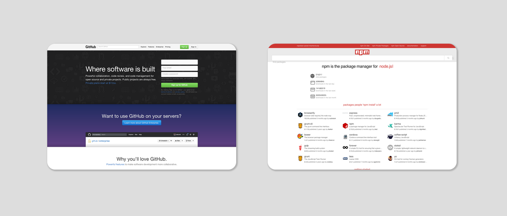

urtil is a little tool that generates html pages, similar to the "New Tab" page of Firefox.
When you provide it with a list of webpages like this:
github.com npmjs.com
It will generate an html page that looks like this:
Some notes on the config file from the main example:
@ . ts 300 . fg #fff . bg #555
tiles . html . refresh
@ . tw 300 . th 210 . bg #7fc4d2
github.com . -
atom.io
electron.atom.io . -
nodejs.org
npmjs.com . -
gulpjs.com
gruntjs.com . -
The first line is the main page setup: 300 pixel square tiles with custom page and title colors.
The second line creates a local html file with the title tiles.
The tiles page has tiles of size 300x210 and a custom background color.
. - means: centers the preceeding tiles and let the next tile begin on a new line.
useless
heeeeeeeey.com
thatsthefinger.com
eelslap.com
www.staggeringbeauty.com
www.republiquedesmangues.fr
www.movenowthinklater.com
www.koalastothemax.com
grandpanoclothes.com
...
This list contains a subset of the links from Tim Holmans useless-web.
No config section was neccessary here because the defaults are suitable for larger link collections.
monsterkodi . html . - . refresh . title off
@ . bg #444 . fg #fff . ts 300
monsterkodi.net . image ../monsterkodi.net.png
monsterkodi.github.io
-
github.com/monsterkodi
npmjs.com/~monsterkodi
-
projects . html . - . sh 960 . !
@ . bg #333 . fg white . ts 250
monsterkodi.github.io/urtil
monsterkodi.github.io/password-turtle
monsterkodi.github.io/knix
-
www.npmjs.com/package/strudl
www.npmjs.com/package/sds
www.npmjs.com/package/noon
-
www.npmjs.com/package/color-ls
www.npmjs.com/package/colorcat
www.npmjs.com/package/konrad
-
The image keyword (3rd line) can be used to provide an image in case the website doesn't render with the underlying webshot.
Titles are shown by default on hover. title off turns them off completely. title on would show them always.
If urtil has created a thumbnail image for a webpage in previous runs, it doesn't regenerate it by default. The refresh keyword forces it to regenerate the thumbnail on every run.